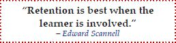

Important take-away points:
- Memorization is not necessarily accompanied by any understanding or the ability to recall information if it is only retained in short-term memory.
- In contrast, meaningful learning is tied to existing knowledge. These connections allow the learner to fully integrate the new knowledge and apply it to novel situations.

The following diagram shows how meaningful learning is achieved with CLM and how that learning aligns with the cognitive process dimension.